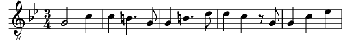

Agnus Dei
Sib majeur

[Solo]Agnus dei, qui tollis peccata,
Qui tollis peccata mundi.
[Tous]Miserere nobis.
[B1B2] Agnus dei, qui tollis peccata,
Qui tollis peccata mundi.
[Tous]Miserere nobis.
Agnus dei, qui tollis peccata,
Qui tollis peccata peccata mundi.
Dona nobis dona dona nobis pacem,
Dona nobis pacem.